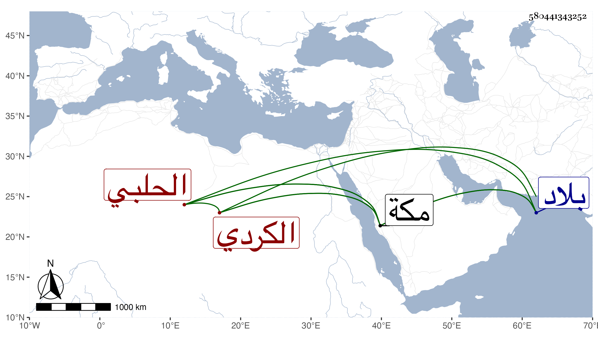

0902Sakhawi.DawLamic.ITO20230111-ara1.EIS1600.580441343252
Biography ID: 580441343252
إبراهيم بن عبد الكريم الكردي الحلبي دخل بلاد العجم وأخذ عن الشريف الجرجاني وغيره وأقام بمكة وكان حسن الخلق كثير البشر بالطلبة انتفعوا به كثيرا في عدة فنون أجلها المعاني والبيان فانه كان يقررها تقريرا واضحا . مات في آخر المحرم سنة أربعين قاله شيخنا في أنبائه وسمي ابن فهد والده خليلا والله أعلم وأرخ وفاته في ليلة الأحد ثامن عشر المحرم بمكة ووصفه بالعلامة وقال غيره أنه قطنها وأقرأ تفسير البيضاوي ومنهاجه وكذا المصابيح والعربية وغيرها وممن ذكر أنه أخذ عنه صاحبنا أبو الوقت عبد الأول المرشدي .
